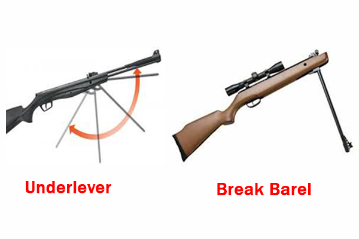

الصيد شغف وهواية نبيلة لها أصول وقواعد تحترم الطبيعة والحيوان وهو تراث تحكمه الأعراف والمبادئ، عرفه الإنسان منذ القِدم ومارسه أجدادنا كمصدر للغذاء ومن أجل التحكم بأعداد الحيوانات الضارة بالمحاصيل الزراعية. ولكن ومع انتشار أسلحة الصيد الاوتوماتيكية والسيارات ذات الدفع الرباعي واستعمال الشباك والدبق وأجهزة مناداة الطيور وصيد الليل وقلة الوعي لدى الكثير ممن أصبحوا يمارسون هواية الصيد في لبنان، أصبح هناك خطر على الطيور البريّة من الانقراض، وكثرت الحوادث الخطيرة مما انعكس سلبا على صورة ومكانة الصياد، في " هواية الملوك". وحرصا على حماية الطبيعة والهواية انطلقت مجموعات صيد على وسائل التواصل الاجتماعي لتنشر الوعي وتدعوا المجموعات الاخرى التي تتباهى بالصيد الجائر الى الالتزام بأخلاقيات الصيد وضرورة المحافظة على الهواية. وبالرغم من كثرة مجموعات الصيد الناشطة والمسؤولة التي تنادي بالممارسات الفضلى، الا ان النتيجة لم تكن كافية لتحقيق حماية الهواية. من هنا تحرّك بعض الصيادين المستدامين وقاموا بإنشاء " اتّحاد مجموعات الصّيد البرّي في لبنان" وهو اتحاد لمجموعات الصيد على الفايسبوك، وذلك بهدف توحيد الجهود للوصول الى نتيجة تحمي الصيد والصياد والطبيعة معا، لأن التجربة علمتهم ان اليد الواحدة لاتصفّق. وهكذا بدأ الاتحاد نشاطه واختار هيئة ادارية له برئاسة الصياد الاستاذ حسن سلمان، واعلن عن سلسلة اهداف ومواقف على صفحته في فايسبوك. ان مجلة صيد تثمن هذا الجهد وتتتمنى للإتحاد واعضائه من كل المناطق اللبنانية النجاح والاستمرار، وتسأل: هل سيحقق هذا العمل نقلة نوعية في حماية الطبيعة والهواية؟ الوقت سيجيب عن صفحة الاتحاد على فاسبوك أهداف الاتحاد : - حسن تطبيق قانون تنظيم الصيد البري اللبناني رقم 580 -العمل الجدّي لتمثيل الصيّاد اللبناني في المجلس الأعلى للصيد البرّي من قبل شخص ينتدبه الاتحاد ويكون خير ممثل ومطالب ومساهم في القرارات التي تخص الصيد البرّي. -نشر ثقافة الصيد البيئي بشكله الصحي والصحيح لصيد مستدام ولحماية التنوع البيولوجي والتوازن الايكولوجي عبر اقامة ورشات عمل مع اختصاصيين ونشر المقالات والمواضيع المرتبطة على صفحات مجموعة الاتحاد. -محاربة الصيد الجائر عبر النصح والارشاد والاضاءة على المخالفات وحث الصيادين على الالتزام بتطبيق القانون. -حماية هواية الصيد والصيّاد اللبناني والدّفاع عن مطالبه تحت سقف القانون في مقابل التزامه بواجباته كصيّاد . -محاربة كل ما يسيء الى هواية الصيد والصيّاد اللبناني من أي جهة أتت. -الانفتاح ومد اليد للتعاون المثمر مع الجمعيّات البيئية ووزارة البيئة والمساهمة في تصحيح الأفكار المسبقة والمغلوطة عن الصيادين والصيد البرّي بشكل عام. -العمل على دراسة ومراجعة القانون الحالي وتقديم اقتراحات لتعديل وتطوير النقاط التي لم تعد تتلاءم وواقعنا الحالي. برنامج الاتّحاد لسنة 2022: -اقامة مشاريع ونشاطات بيئية فصلية على كافة الاراضي اللبنانية عبر وضع أجندة نشاطات قابلة للتنفيذ. -اقامة ورش عمل وجلسات حوار وتوعية عن الصيد المستدام ومخاطر الصيد الجائر . -المساهمة في زراعة أشجار - اطلاق طيور قابلة للتأقلم في بيئتنا -تنظيف الأحراج ومواقع الصيد من المخلّفات التي تضر بالبيئة. -اقامة نشاطات رياضيّة بعد اقفال موسم الصيد ، كرحلات المسير الجبلي او مسابقات الرماية -اقامة ندوات علمية تثقيفية عن الصيد والطبيعة والحيوان في لبنان.
من كل وادي خبر
تزوير أوراق الجوارح أمام القضاء في إسبانيا… وتونس تستضيف لقاءً لمكافحة الاتجار غير المشروع بالطيورعكار: باشق داخل حقيبة ظهر خلال عملية لمكافحة صيد الجوارحتحذير أوروبي: 11–36 مليون طائر سنويًا في المتوسط و83% من الدول لم تعتمد التدابير الكافيةأين تستريح الطيور؟ «صيد» تستعرض أبرز ملاذات الهجرة في المشرق والجزيرة العربية.موسم الطوقي 2026–2027 يسلّط الضوء على حياة محمية الملك عبدالعزيز البريةالبقاع الشمالي: إزالة شباك الصيد غير القانونية ترفع حصيلة الحملة إلى 38,280 م²حين يتغيّر الساحل… أين تستريح الطيور؟قطر تستهدف حماية 30% من مناطقها البرية والبحرية بحلول 2030الملواح يختتم منافساته بتتويج 60 فائزًاحين يصبح الخريف موسماً لاصطياد الصورةرادار صيد العربي | سبتمبر 2026: توقيف 50 صيادًا وإنقاذ آلاف الطيورمن سفوح الأطلس إلى سواحل البحر الأحمر... موسم الصيد العربي يدخل خريف 2026من صقلية إلى لبنان: معركة إنقاذ الطيور المهاجرة من الصيد الجائرسماء الكوكب تفقد توازنها: تقرير «بيرد لايف» يدق ناقوس الخطر حول مسارات الهجرة العالميةكيف فقدت مسارات الهجرة 7 من طيورها خلال 150 عاماً؟دمار بيئي واسع في جنوب لبنان يهدد أحد أهم ممرات هجرة الطيور في العالم
تزوير أوراق الجوارح أمام القضاء في إسبانيا… وتونس تستضيف لقاءً لمكافحة الاتجار غير المشروع بالطيورعكار: باشق داخل حقيبة ظهر خلال عملية لمكافحة صيد الجوارحتحذير أوروبي: 11–36 مليون طائر سنويًا في المتوسط و83% من الدول لم تعتمد التدابير الكافيةأين تستريح الطيور؟ «صيد» تستعرض أبرز ملاذات الهجرة في المشرق والجزيرة العربية.موسم الطوقي 2026–2027 يسلّط الضوء على حياة محمية الملك عبدالعزيز البريةالبقاع الشمالي: إزالة شباك الصيد غير القانونية ترفع حصيلة الحملة إلى 38,280 م²حين يتغيّر الساحل… أين تستريح الطيور؟قطر تستهدف حماية 30% من مناطقها البرية والبحرية بحلول 2030الملواح يختتم منافساته بتتويج 60 فائزًاحين يصبح الخريف موسماً لاصطياد الصورةرادار صيد العربي | سبتمبر 2026: توقيف 50 صيادًا وإنقاذ آلاف الطيورمن سفوح الأطلس إلى سواحل البحر الأحمر... موسم الصيد العربي يدخل خريف 2026من صقلية إلى لبنان: معركة إنقاذ الطيور المهاجرة من الصيد الجائرسماء الكوكب تفقد توازنها: تقرير «بيرد لايف» يدق ناقوس الخطر حول مسارات الهجرة العالميةكيف فقدت مسارات الهجرة 7 من طيورها خلال 150 عاماً؟دمار بيئي واسع في جنوب لبنان يهدد أحد أهم ممرات هجرة الطيور في العالم